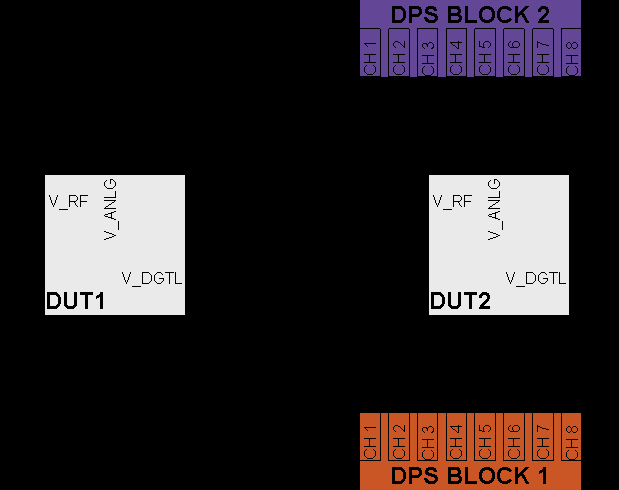

Resource allocation rules
Resource assignment for a multi-site test must take the structure of the hardware into account.
The following rules must be observed when setting up a multi-site test.
PinScale Cards
- The same pin must be assigned to channels of the same hardware type for different sites (for example, if it is assigned to a PS1600 channel on one site, it must be assigned to a PS1600 channel on all sites).
- Every logical board has only one board ADC. If therefore a pin connects to the board ADC, the pin must be assigned to different logical boards for different sites.
DPS
- Use a different DPS channel for each power supply within the DUT.
(This is not only a multi-site specific rule).
- Use different DPS channels for each site.
Example
The following figure illustrates the rules for DPS assignment:
